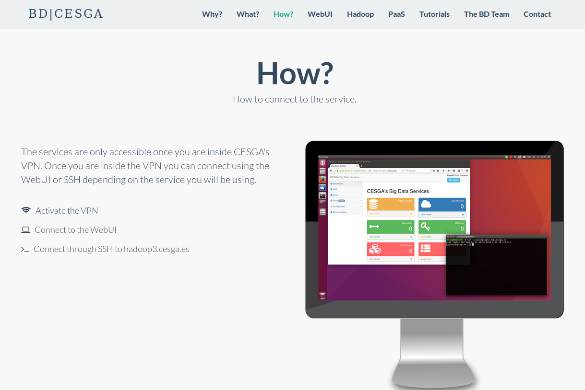
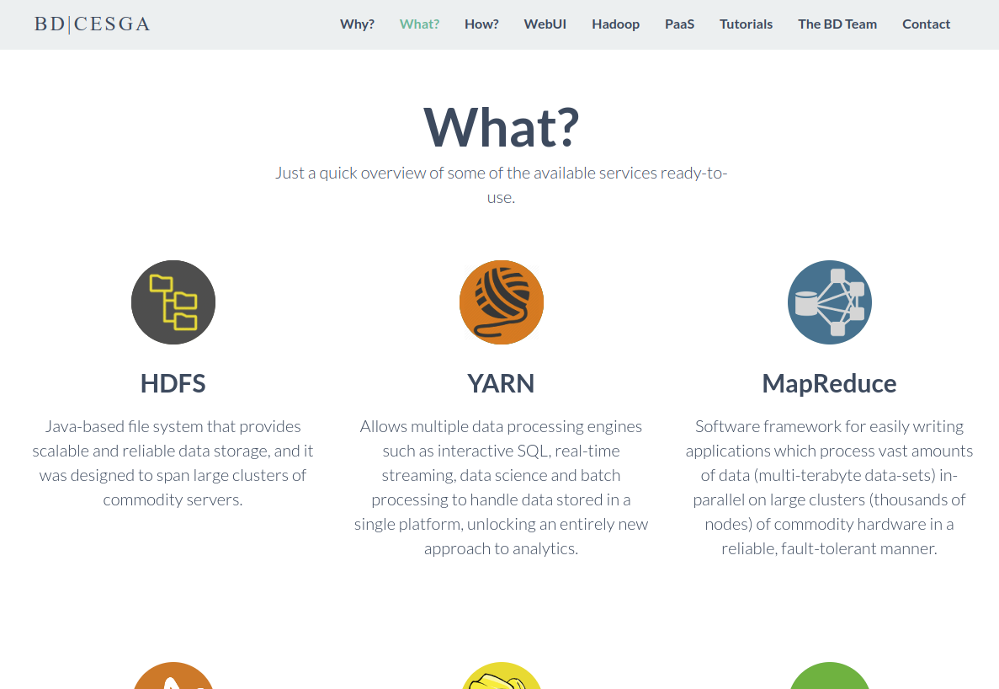
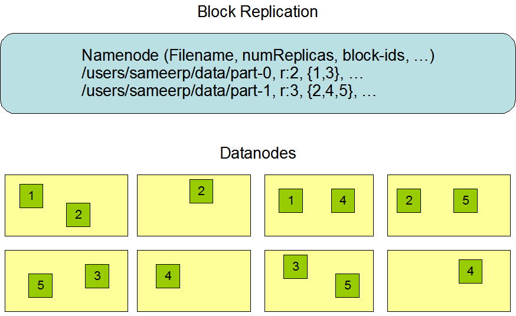
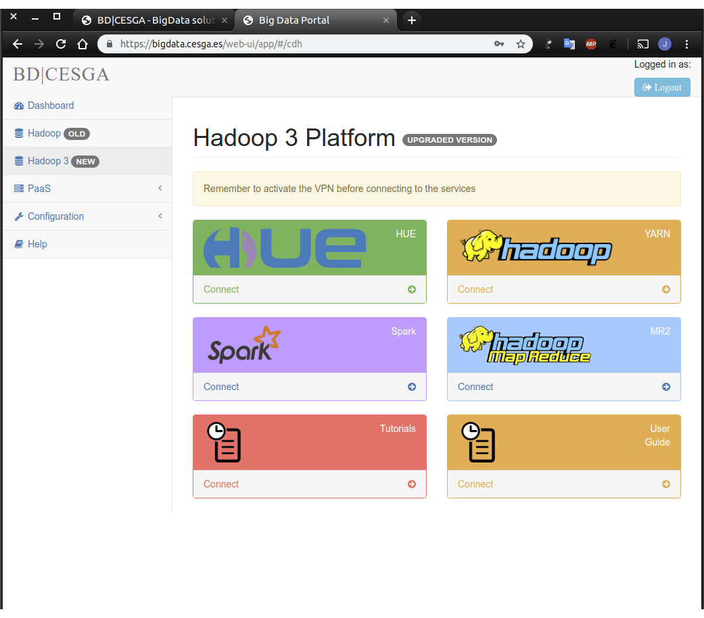

BD|CESGA
Providing quick access to ready-to-use Big Data solutions
Because Big Data doesn't have to be complicated
Javier Cacheiro / Cloudera Certified Developer for Hadoop / @javicacheiro
Big Data
What?
The 3V model
Data Centric
Compute centric: bring the data to the computation
Data centric: bring the computation to the data
MPI Shortcomings
Jonathan Dursi: HPC is dying, and MPI is killing it
- Wrong level of abstraction for application writers
- No fault-tolerance
MPI Boilerplate
| Framework | Lines | Lines of Boilerplate |
|---|---|---|
| MPI+Python | 52 | 20+ |
| Spark+Python | 28 | 2 |
| Chapel | 20 | 1 |
BD|CESGA
Hardware
Evolution
- 2013: Initial service providing Hadoop on cloud
- 2014: Hadoop on SVG for demanding applications
- 2015: BD hardware requirement analysis
- End of 2015: End of the procurement process
- July 2016: new infrastructure ready for production
Hardware Infrastructure
- 38 nodes: 4 masters + 34 slaves
- Storage capacity 816TB
- Aggregated I/O throughtput 30GB/s
- 64GB RAM per node
- 10GbE connectivity between all nodes
Hardware Master Nodes
- Model: Lenovo System x3550 M5
- CPU: 2x Intel Xeon E5-2620 v3 @ 2.40GHz
- Cores: 12 (2x6)
- HyperThreading: On (24 threads)
- Total memory: 64GB
- Network: 1x10Gbps + 2x1Gbps
- Disks: 8x 480GB SSD SATA 2.5" MLC G3HS
- Controller: ServeRAID M5210 1GB Cache FastPath
Hardware Slave Nodes
- Modelo: Lenovo System x3650 M5
- CPU: 2x Intel Xeon E5-2620 v3 @ 2.40GHz
- Cores: 12 (2x6)
- HyperThreading: On (24 threads)
- Total memory: 64GB
- Network: 1x10Gbps + 2x1Gbps
- Disks: 12x 2TB NL SATA 6Gbps 3.5" G2HS
- Controller: N2215 SAS/SATA HBA
BD|CESGA
Software
Platforms available
- Hadoop Platform
- PaaS Platform (beta)
Hadoop Platform
- Ready to use Hadoop ecosystem
- Covers most of the uses cases
- Production ready
- Fully optimized for Big Data applications
PaaS Platform
- When you need something outside the Hadoop ecosystem
- Enables you to deploy custom Big Data clusters
- Advanced resource planning based on Mesos
- No virtualization overheads: based on Docker
- Includes a catalog of products ready to use: eg. Cassandra, MongoDB, PostgreSQL
BD|CESGA Portal
hadoop.cesga.es
Front Page

General info
Tools available
WebUI
Tutorials
Hadoop Platform
Your ready-to-use Hadoop ecosystem
Ecosystem
Core Components
- HDFS: Parallel filesystem
- YARN: Resource manager
HDFS
The Hadoop Distributed Filesystem
HDFS Architecture

HDFS Replicas
Upload a file to HDFS
To upload a file from local disk to HDFS:
hdfs dfs -put file.txt file.txtIt will copy the file to /user/username/file.txt in HDFS.
List files
To list files in HDFS:
hdfs dfs -lsLists the files in our HOME directory of HDFS /user/username/
To list files in the root directory:
hdfs dfs -ls /Working with directories
Create a directory:
hdfs dfs -mkdir /tmp/testDelete a directory:
hdfs dfs -rm -r -f /tmp/testWorking with files
Read a file:
hdfs dfs -cat file.txtDownload a file from HDFS to local disk:
hdfs dfs -get fichero.txtWeb File Explorer
You can easily access the HUE File Explorer from the WebUI:

Monitoring
You can easily access the NameNode UI from the WebUI:
YARN
Yet Another Resource Negotiator
YARN Architecture

Launching an application
yarn jar application.jar DriverClass input outputList running jobs
yarn application -listSee application logs
yarn logs -applicationId applicationIdKill an application
yarn application -kill applicationIdCapacity Scheduler Queues
WebUI
YARN UI
MapReduce
MapReduce is a programming model and an associated implementation for processing and generating large data sets with a parallel, distributed algorithm on a cluster.
MapReduce
Launching a job
To launch a job:
yarn jar job.jar DriverClass input outputList MR jobs
To list running MR jobs:
mapred job -listCancelling a job
To cancel a job:
mapred job -kill [jobid]Monitoring
You can easily monitor your jobs using the YARN UI from the WebUI:
Job History
You can see finished jobs using the MR2 UI from the WebUI:
Quick how-to
- We write two separated scripts: Mapper y Reducer
- The Mapper script will receive as stdin the file line by line
- The stdout of the Mapper and Reducer must be key-value pairs separated by a tab
Spark
A fast and general engine for large-scale data processing
Speed
Easy

Generality
Language Selection
- Scala
- Java
- Python
- R
PySpark
PySpark Basics
- Based on Anaconda Python distribution
- Over 720 packages for data preparation, data analysis, data visualization, machine learning and interactive data science
Running pyspark interactively
- Using Jupyter notebook
- Running from the command line using ipython:
PYSPARK_DRIVER_PYTHON=ipython pyspark
Example
[jlopez@login7 ~]$ PYSPARK_DRIVER_PYTHON=ipython pyspark
>>> from pyspark.sql import Row
>>> Person = Row('name', 'surname')
>>> data = []
>>> data.append(Person('Joe', 'MacMillan'))
>>> data.append(Person('Gordon', 'Clark'))
>>> data.append(Person('Cameron', 'Howe'))
>>> df = sqlContext.createDataFrame(data)
>>> df.show()
+-------+---------+
| name| surname|
+-------+---------+
| Joe|MacMillan|
| Gordon| Clark|
|Cameron| Howe|
+-------+---------+
SparkR
SparkR Basics
- Anaconda R distribution
- r-essentials bundle: contains the IRKernel and more than 80 of the most popular R packages for data science, including dplyr, shiny, ggplot2, tidyr, caret and nnet.
Running SparkR interactively
- Using Jupyter notebook
- Running from the command line
[jlopez@login6 ~]$ sparkR
Example
[jlopez@login7 ~]$ sparkR
> df <- createDataFrame(sqlContext, faithful)
> head(df)
eruptions waiting
1 3.600 79
2 1.800 54
3 3.333 74
4 2.283 62
5 4.533 85
6 2.883 55
Jupyter Setup 1/2
Start an SSH session with X11 support:ssh -X login.hdp.cesga.esJupyter Setup 2/2
Inside the notebook initialize the Spark context:
Sys.setenv(SPARK_HOME='/usr/hdp/2.4.2.0-258/spark')
.libPaths(c(file.path(Sys.getenv('SPARK_HOME'), 'R', 'lib'), .libPaths()))
library(SparkR)
sc <- sparkR.init(master="yarn-client")
sqlContext <- sparkRSQL.init(sc)
spark-submit
Submit job to queue
Spark Components

spark-submit Python
# client mode
spark-submit --master yarn \
--name testWC test.py input output
# cluster mode
spark-submit --master yarn --deploy-mode cluster \
--name testWC test.py input output
spark-submit Scala/Java
# client mode
spark-submit --master yarn --name testWC \
--class es.cesga.hadoop.Test test.jar \
input output
# cluster mode
spark-submit --master yarn --deploy-mode cluster \
--name testWC \
--class es.cesga.hadoop.Test test.jar \
input output
spark-submit options
--num-executors NUM Number of executors to launch (Default: 2)
--executor-cores NUM Number of cores per executor. (Default: 1)
--driver-cores NUM Number of cores for driver (cluster mode)
--executor-memory MEM Memory per executor (Default: 1G)
--queue QUEUE_NAME The YARN queue to submit to (Default: "default")
--proxy-user NAME User to impersonate
Hive
SQL-like interface
Hive
Hive offers the possibility to use Hadoop through a SQL-like interface
Hive and Impala use the same SQL syntax HiveQL
Field delimitter
- Default field delimitter Ctr+A (0x01)
- It can be changed when creating a table
ROW FORMAT DELIMITED FIELDS TERMINATED BY ':'
Sqoop
Transferring data between Hadoop and relational databases
Sqoop
List tables
sqoop list-tables \
--username ${USER} -P \
--connect jdbc:postgresql://${SERVER}/${DB}
Import one table
sqoop import \
--username ${USER} --password ${PASSWORD} \
--connect jdbc:postgresql://${SERVER}/${DB} \
--table mytable \
--target-dir /user/username/mytable \
--num-mappers 1
Import into Hive
sqoop import \
--username ${USER} --password ${PASSWORD} \
--connect jdbc:postgresql://${SERVER}/${DB} \
--table mytable \
--target-dir /user/username/mytable \
--num-mappers 1 \
--hive-import
Create only the table structure into Hive
sqoop create-hive-table \
--username ${USER} --password ${PASSWORD} \
--connect jdbc:postgresql://${SERVER}/${DB} \
--table mytable
Sqoop Export
Export
First create table into PostgreSQL
sqoop export \
--username ${USER} --password ${PASSWORD} \
--connect jdbc:postgresql://${SERVER}/${DB} \
--table mytable \
--export-dir /user/username/mytable \
--input-fields-terminated-by '\001' \
--num-mappers 1
Direct mode
For MySQL and PosgreSQL for faster performance you can use direct mode (--direct option)
Machine Learning
Mahout
Apache Mahout is a machine learning library that includes collaborative filtering, clustering and classification algorithms built using MapReduce.
Introduction to Item-Based Recommendations with HadoopSpark MLlib
- Machine Learning library for Spark
- RDD-based API
Spark ML
- Machine Learning library for Spark
- Dataframes-based API
Optimizations
Improving the performance
BLAS
Low-level routines for performing common linear algebra operations
- Intel MKL: /opt/Anaconda2-4.1.1/lib/libmkl_rt.so
Single Dynamic Library (SDL) interface - OpenBlas: /usr/lib64/libopenblas.so.0
NumPy
Adds support to Python for fast operations with multi-dimensional arrays and matrices
Already configured to use Intel MKL
Storage Formats


Demo Tutorials
How to connect
How to connect: Setup
- Start the VPN
- Create a ssh tunnel
ssh -C2qTnNf -D 9876@login.hdp.cesga.es - Configure your browser to use localhost:9876 as a SOCKS v5 proxy
- Select Remote DNS
How to connect: CLI
Using a powerful CLI through SSH:
ssh @login.hdp.cesga.es How to connect: WebUI
Using a simple Web User Interface
Jupyter
The Jupyter Notebook is a web application that allows you to create and share documents that contain live code, equations, visualizations and explanatory text.
Launching Jupyter
- Connect to login.hdp.cesga.es
- Go to your working directory
- Launch the Jupyter server
start_jupyter - Type a password to protect the notebook
- Point your browser to the address where the notebook is running:
The Jupyter Notebook is running at: http://1.2.3.4:8888/
Jupyter
Jupyter Terminal
Jupyter Conda
Sqoop
Hive
Spark
MapReduce for Java developers
Development Environment Setup
- For a sample Maven-based project use:
git clone https://github.com/bigdatacesga/mr-wordcount - Import the project in Eclipse using m2e or in Intellij
- If using an IDE like Eclipse or Intellij it can be useful to:
# Download sources and javadoc mvn dependency:sources mvn dependency:resolve -Dclassifier=javadoc # Update the existing Eclipse project mvn eclipse:eclipse # Or if you using Intellij IDEA mvn idea:idea
Maven Basic Usage
Compile:
mvn compileRun the tests
mvn testPackage your app
mvn packageManual Process
If you prefer to compile and package manually:
javac -classpath $(hadoop classpath) *.java
jar cvf wordcount.jar *.class
MapReduce Program
Basic components of a program:
- Driver: management code for the job or sequence of jobs
- map function of the Mapper
- reduce function of the Reducer
Driver Code
public class Driver {
public static void main(String[] args) throws Exception {
Configuration conf = new Configuration();
Job job = Job.getInstance(conf);
job.setJarByClass(Driver.class);
job.setJobName("Word Count");
job.setMapperClass(WordMapper.class);
job.setCombinerClass(SumReducer.class);
job.setReducerClass(SumReducer.class);
job.setOutputKeyClass(Text.class);
job.setOutputValueClass(IntWritable.class);
FileInputFormat.setInputPaths(job, new Path(args[0]));
FileOutputFormat.setOutputPath(job, new Path(args[1]));
boolean success = job.waitForCompletion(true);
System.exit(success ? 0 : 1);
}
}
Map Code
public class WordMapper
extends Mapper<LongWritable, Text, Text, IntWritable> {
private final static IntWritable one = new IntWritable(1);
private Text word = new Text();
@Override
public void map(LongWritable key, Text value, Context context)
throws IOException, InterruptedException {
String line = value.toString();
for (String field : line.split("\\W+")) {
if (field.length() > 0) {
word.set(field);
context.write(word, one);
}
}
}
}
Reduce Code
public class SumReducer
extends Reducer<Text, IntWritable, Text, IntWritable> {
@Override
public void reduce(
Text key, Iterable<IntWritable> values, Context context)
throws IOException, InterruptedException {
int wordCount = 0;
for (IntWritable value : values) {
wordCount += value.get();
}
context.write(key, new IntWritable(wordCount));
}
}
Success Stories
Gaia (UDC)

FilmYou (CITIC)
Q&A
We are here to help:
Stay up to date subscribing to our Mailing list